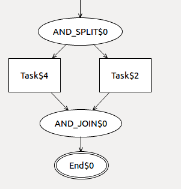

| Name | Description | Preview |
| FSM | This example contains the complete definition of a Finite State Machine language | |
| SBP | This example contains the definition of a Structure Business Process language (a kind of Control Flow Diagram) |  |
| Turing Machine | This example contains the complete definition of a turing machine language | |
| PetriNet | This example contains the complete definition of a PetriNet language | |
| Name | Description | Preview |
| CD2RDBMS | This example contains the definition of two languages : Class Diagram (CD) and Relational Database Management System (RDBMS). It also feature a transformation from CD to RDBMS. | |
| SBP2Pnet | This example contains the definition of two languages : Structured Business Process (SBP) and PetriNet (Pnet). It also feature a transformation from SBP to its semantically equivalent Pnet. | |
| Name | Description | Preview |
| Repotting Geraniums | An implementation of the "repotting the geraniums case study" introduced by Arend Rensink and Jan-Hendrik Kuperus in this paper | |
| Class Diagram Refinements | The implementation of a class diagram refinement consisting of replacing association classes by regular classes and by removing the abstract modifier of non-inherited abstract classes. | |
| Kleppe's OO language semantics | The implementation of the semantics of the object oriented language Kleppe introduce in her book, software language engineering in chapter 9. | |